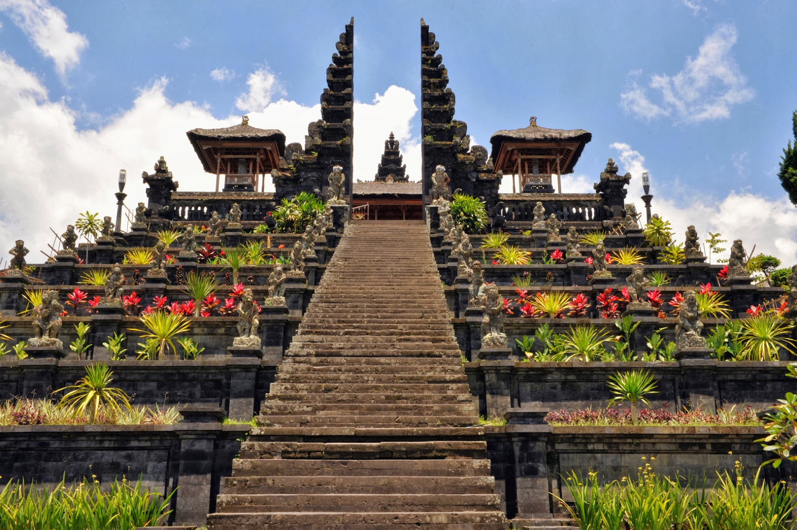

Garuda Wisnu Kencana
Garuda Wisnu Kencana sebuah tempat monumental sebagai taman budaya yang menampung berbagai kegiatan
seni dan budaya lokal.
Pantai Kelingking
Pantai Kelingking Bali tempat paling ikonik di Nusa Penida yang dikelilingi Tanjung dan Tebing Curam
dengan Semburat Air Berwarna Biru Pirus.
Pura Tanah Lot
Tanah Lot salah satu pura penting bagi umat Hindu Bali dan lokasi pura terletak di atas batu besar
yang berada di lepas pantai.
Puri Ubud
Puri Ubud atau dikenal dengan nama Puri Saren Agung, yang merupakan sebuah istana sebagai pusat
pemerintahan kerajaan yang berkuasa pada masanya.
Pura Uluwatu
Pura Luhur Uluwatu berada di atas tebing setinggi 97 meter di atas permukaan laut yang menjorok ke
laut lepas Samudera Indonesia.

Pura Besakih
Pura Besakih merupakan pusat kegiatan agama Hindu Bali dan Pura Penataran Agung Besakih adalah Pura
terbesar di wilayah Pura ini.
Tirta Gangga
Tirta Gangga memiliki air suci yang berasal dari Sungai Gangga sebagai bentuk penghormatan kepada
masyarakat pemeluk agama Hindu
Gunung Batur, Kintamani
Gunung Batur menjadi salah satu tujuan wisata mendaki populer di Bali terutama untuk pecinta rekreasi
alam petualangan